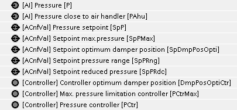
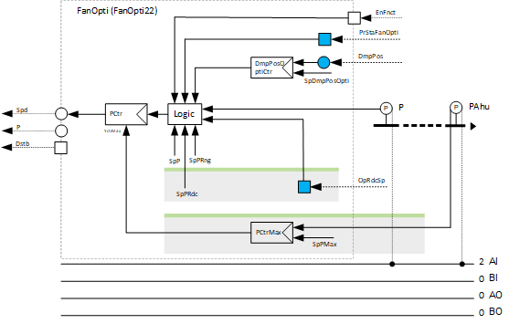
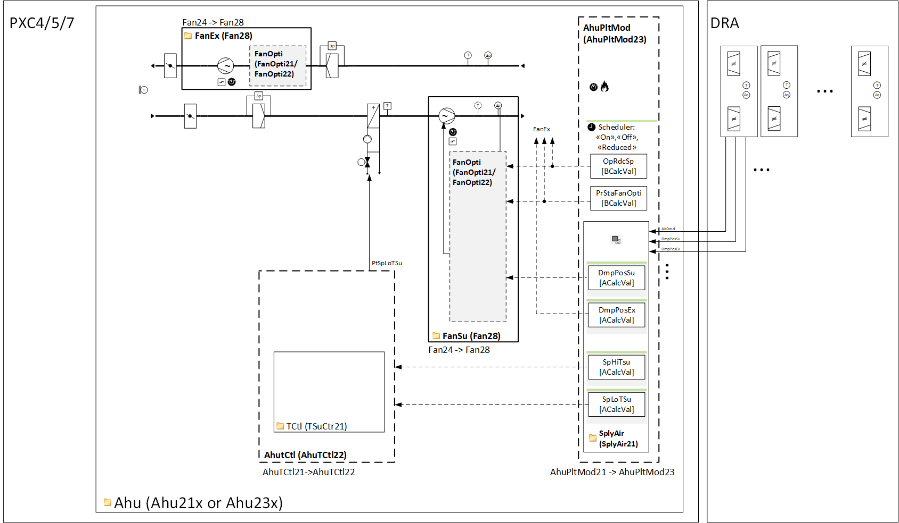

[FanOpti22] Fan speed optimization, pressure setpoint shift
Program block, name / node subtype: [FanOpti22] Fan speed optimization, pressure setpoint shift
Library hierarchy: Ventilation and air conditioning equipment
Family: FanOpti
Project tree | Diagram |
|---|---|
 |  |

Program blocks are stored in the library without I/Os. Use the auto-create and auto-connect functions to create I/Os and/or to connect them to the interface blocks, e.g., R_A, CMD_B. Alternatively, take the I/Os from the folder containing the predefined I/Os in the library and/or from the plant and connect them to the interface blocks.
Function
Performs fan speed optimization with pressure setpoint shift for a constant pressure control.
When optimization is enabled, the program reads the evaluated damper position from the "Supply chain for air" coordination (e.g., the average of the 10 highest values), compares it to a setpoint for the optimal damper position (e.g., 80 %), and adjusts the setpoint for the constant pressure control within an adjustable range using a PID controller.
When optimization is not enabled, the setpoint for the constant pressure control is applied directly.
The constant pressure control setpoint is stored before each optimization start and reapplied after the optimization stop.
All alarms generated by the following options stop the fan, block its outputs with high priority (priority 5) and shut down the plant.
Optional functions
This program block has the following optional functions:
Option: Maximum pressure limitation (1xAI)
Reads the signal from a pressure sensor near the air handler and provides it to a PID controller for maximum pressure limitation. This controller compares the signal to a maximum pressure setpoint and limits the maximum output of the optional constant pressure controller.
This function is useful for limiting the pressure near the air handler when the pressure sensor for constant pressure control is located far from the air handler. Without this function, there is a risk of intolerably high (or low) pressure near the air handler in the event of a mechanical problem with the distant pressure sensor or excessive pressure loss between the sensor and the air handler.
Option: Setpoint reduced pressure
Reads the signal from the plant operating mode indicating that reduced operation is active and provides a pressure setpoint for reduced operation to the pressure control.
The following diagram illustrates the use of FanOpti21 in the context of an air handling unit and coordination with DRA.

Mandatory elements
Name | Description | Type | Alarm / Notification class | Trend / Type | |
|---|---|---|---|---|---|
P | Pressure | AI: Analog input | Yes, 4 | Yes, 2 | |
PCtr | Pressure controller | Ctr: Controller | N/A | N/A | |
SpP | Pressure setpoint | ACnfVal: Analog configuration value | No | Yes, 4 | |
SpPRng | Setpoint pressure range | ACnfVal: Analog configuration value | No | Yes, 4 | |
SpDmpPosOpti | Setpoint optimum damper position | ACnfVal: Analog configuration value | N/A | Yes, 4 | |
DmpPosOptiCtr | Controller optimum damper position | Ctr: Controller | N/A | N/A | |
Further options
Description |
|---|
Maximum pressure limitation Elements that belong to this option: Setpoint pressure maximum | ACnfVal: Analog configuration value Maximum pressure limitation controller | Ctr: Controller Pressure close to air handler | AI: Analog input |
Pressure setpoint reduced Elements that belong to this option: Pressure setpoint, reduced | ACnfVal: Analog configuration value |